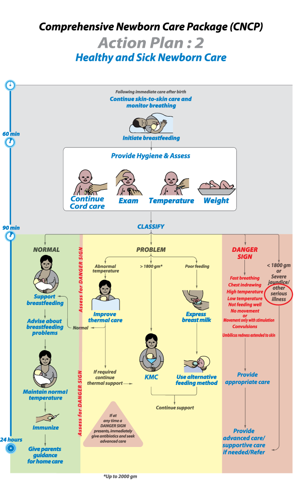

Pic: Action Plan# 2.21
Neonates and young babies often present with non-specific symptoms and signs that indicate severe illness. These signs might be present at or after delivery or in a newborn presenting to hospital or develop during hospital stay. Give prophylactic antibiotics only to neonates with the following documented risk factors of mother as they are more likely to develop serious bacterial infection.
- Membranes ruptured >18 hours before delivery
- Mother had fever >38°C before delivery or during labor
- Amniotic fluid was foul-smelling or purulent
All of the danger signs are signs of serious bacterial infections, and they include not feeding well, convulsions, drowsy or unconscious, movement only when stimulated or no movement at all, fast breathing (60 or more breaths per min), severe chest in-drawing, raised temperature (>38°C), hypothermia (<35.5°C). Other signs are grunting, central cyanosis, severe jaundice and severe abdominal distension.
Localizing signs of infection are:
- Signs of pneumonia
- Many or severe skin pustules
- Umbilicus draining pus
- Bulging fontanelle
- Painful joints, joint swelling, reduced movement and irritability if these parts are handled

Investigation
CBC, peripheral blood film, C reactive protine, blood groping RH typing, Blood CH, CSF-CS, chest x-ray (if needed)
Management
Antibiotic therapy: Empirical antibiotics should be given for suspected neonatal sepsis.
- When possible, do a lumbar puncture and obtain blood cultures before starting antibiotics
- For newborns with any signs of serious bacterial infection or sepsis, give ampicillin and gentamicin as first-line antibiotic
- If at greater risk of staphylococcus infection (extensive skin pustules, abscess or omphalitis in addition to signs of sepsis) give IV cloxacillin and gentamicin
- The most serious bacterial infections in newborns should be treated with antibiotics for at least 7–10 days
Other treatment
- Make regular checks for hypoglycaemia
- If the baby is drowsy or unconscious, ensure that hypoglycaemia is not present; if it is, give 2 ml/kg 10% glucose IV
- Manage convulsions accordingly
- If a baby is not improving within 2–3 days, change the antibiotic treatment or seek advance care for further management
- Continue breastfeeding if baby can feed